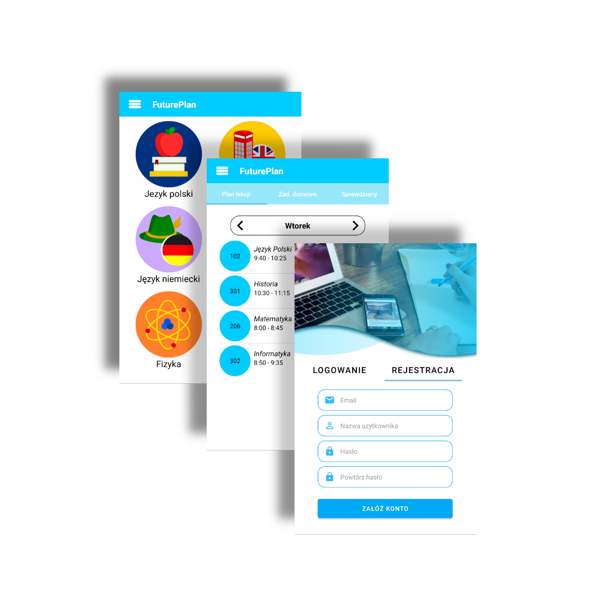

FUTURE PLAN
O APLIKACJI
Projekt „Future Plan” jest to aplikacja, która ma pomóc w planowaniu roku szkolnego. Są w niej zawarte takie funkcje jak terminarz czy plan lekcji, w których można zapisać ważne wydarzenia np. sprawdziany, kartkówki, dzięki czemu o nich nie zapomnimy. Aplikacja będzie również pomocna w nauce lub utrwalaniu różnych zagadnień. Aplikacja cechuje się głównie tym, że posiada wiele funkcji w jednym miejscu, dzięki czemu nie musimy mieć X aplikacji tylko jedną zawierającą wszystkie funkcje. Future Plan został napisany w środowisku programistycznym Android Studio zbudowanym na podstawie oprogramowania IntelliJ IDEA od JetBrains. Język, w którym została napisana aplikacja to Java.
Nasz zespół na bierząco dodaje nowe funkcjonalności oraz poprawki do aplikacji. Staramy się by aplikacja mobilna była łatwa w obsłudze oraz przyjemna dla oka.
WYGLĄD I FUNKCJE
Aplikacja Future Plan posiada system rejestracji i logowania co pozwala użytkownikom na zachowanie swoich danych w aplikacji na innych urządzeniach dzięki zapisywaniu danych w Firebase od Google.
Oprócz funkcji takich jak „Terminarz” czy „Plan lekcji”, Future Plan posiada zakładkę „Pomoce naukowe”, gdzie znajdziemy podstawowe zagadnienia, które pomogą nam w nauce. Natomiast dzięki funkcji „Fiszki” możemy uczyć się własnych zagadnień, a dzięki funkcji „Notatki” możemy notować najważniejsze dla nas informacje.
Future Plan posiada także funkcje zmiany języka oraz ustawienie motywu na ciemny.

Programista
Grafik i lider zespołu
Programista